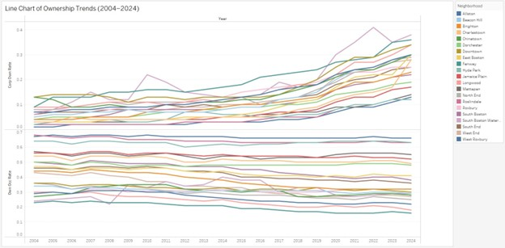
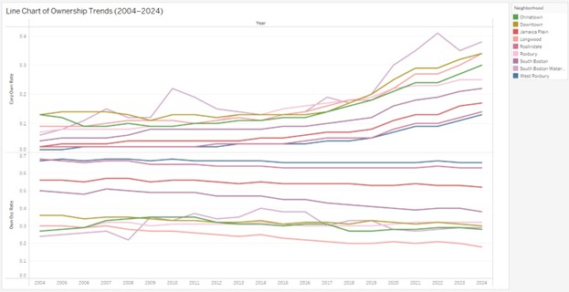
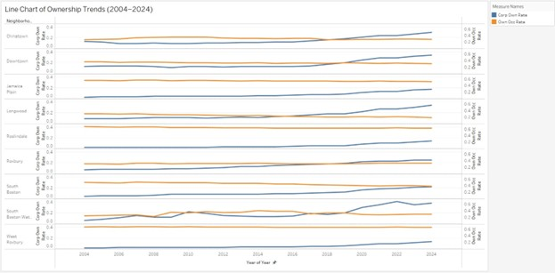

Subtheme: Corporate Ownership & Housing Instability
Prior research (such as the Homes For All report below) has shown that corporate and absentee landlords evicted more people during COVID in the state of MA. Evictions can have devastating impacts on residents, families and communities. Conversely, live-in (or live-nearby) landlords tended to file for fewer evictions, leading the report to make a recommendation that local control of property contributes to housing stability. Communities of color, especially Black and Latinx people, faced particularly high rates of eviction. Do these findings hold up in the City of Boston? Are there more evictions in census tracts with less owners living in them? How have rates of owner occupancy and corporate ownership in Boston changed over time? Are there more corporate landlords now than there have been in the past?
1. Introduction
In this report I examined the relationship between corporate ownership of residential properties, owner-occupancy trends, racial demographics, and potential eviction risks in Boston neighborhoods from 2004 to 2024. Prior research (such as the Homes for All MA report and NYT article) suggests that corporate landlords are more likely to file eviction proceedings than live-in landlords, disproportionately affecting communities of color. This study analyzes data from Boston property assessments and census records to evaluate these claims and to explore how changes in ownership structures might influence eviction filing rates.
Key questions include:
- Are neighborhoods with more corporate-owned (or absentee) properties experiencing higher rates of eviction?
- Have corporate ownership and owner-occupancy rates changed significantly over the past 20 years?
- Are there notable racial disparities in where evictions are concentrated?
- How do corporate ownership and owner-occupancy rates compare across Boston neighborhoods?
- What is the relationship between owner-occupancy rates and eviction filing rates in Boston neighborhoods?
In this report, I used aggregated neighborhood-level and census data on property ownership and demographics, as well as eviction filing data drawn from Massachusetts court filings, to examine and answer those questions.
2. Data Overview
The datasets used in this study include:
- Boston Neighborhoods and Zip Codes: Provides mapping between neighborhoods and zip codes.
- Census and Corporate Ownership Data: Contains demographic breakdowns, owner-occupancy rates, corporate ownership rates, and institutionalized population data.
- Corporate Ownership Over Time: Tracks corporate ownership rates and owner-occupancy rates across neighborhoods over 20 years.
Key variables analyzed:
- Corporate ownership rate (% of properties owned by corporations)
- Owner-occupancy rate (% of properties occupied by owners)
- Demographics: Racial breakdowns (Black, Hispanic, White, Asian populations)
Although the datasets do not directly provide total numbers of rental units, one can approximate by using 1 – (owner occupancy rate) as the rental percentage. Neither of the provided data sets in .csv had any information on the number of evictions or rates of evictions across neighborhoods. Therefore, the eviction-filing numbers were obtained from external reporting (including Mass Landlords association, Massachusetts court filings, city records, and analyses by advocacy organizations).
3. Key Findings
Corporate Ownership Is Rising Citywide
- From 2004 to 2024, corporate ownership of housing stock steadily increased in nearly every Boston neighborhood. Certain areas such as Roxbury, Downtown, and the South Boston Waterfront experienced sharper post-2015 accelerations, indicating significant investor activity.
Owner-Occupancy Rates Remain Higher in Peripheral Neighborhoods
- Neighborhoods like West Roxbury, Roslindale, and Hyde Park continue to have a high share of owner-occupied homes, showing only moderate drops in owner-occupancy over the 20-year period. Central neighborhoods—especially those with substantial student populations (e.g., Allston, Mission Hill)—maintained low owner-occupancy rates, indicating that rental markets remain dominant there.
Evictions Are More Prevalent Where Owners Do Not Reside
- Across Boston’s neighborhoods, low owner-occupancy correlates strongly with higher eviction filing rates. Neighborhoods such as East Boston, Mattapan, and parts of Dorchester, which have lower proportions of live-in owners, also show some of the highest eviction filing rates.
Communities of Color Experience Disproportionately Higher Eviction Rates
- Aligning with prior research, census tracts that have higher percentages of Black and Latinx residents tend to face higher eviction filing rates. This pattern suggests that residents of color may be especially vulnerable to displacement pressures in neighborhoods dominated by corporate or absentee ownership.
Investor Purchases in Traditionally Renter-Heavy Areas
- Renter-heavy neighborhoods (e.g., East Boston, parts of Roxbury) have seen notable spikes in corporate ownership. Coupled with existing lower owner-occupancy, these changes can lead to increased churn in rental housing and a heightened risk of eviction for tenants.
4. Discoveries & Insights
Below are the key research questions I formulated that guided my research and analysis of the topic. Each question is followed by summaries of the relevant visual analyses.
Research Question: How have corporate property ownership rates and owner-occupancy rates changed in Boston’s neighborhoods from 2004 to 2024?
Over a span of 20 years, I analyzed property data to understand who owns Boston’s housing and who lives in it. The findings point to notable changes in both corporate ownership (properties held by LLCs, trusts, or companies) and owner-occupancy (homes occupied by their owners). The charts below illustrate these trends across various neighborhoods.
Citywide Overview
The first chart compares corporate ownership rates (upper panel) with owner-occupancy rates (lower panel) for all Boston neighborhoods between 2004 and 2024.
Key Observations (Citywide)
- Corporate ownership has steadily increased across the city, with a noticeable acceleration after 2015.
- Owner-occupancy rates remained stable in some areas but declined in others.
- Central neighborhoods experienced the most significant shift toward investor-owned properties.
Insight: Overall, there is a clear trend toward more investor-owned properties and fewer resident homeowners in Boston, although the speed and extent of these changes vary by neighborhood.
Neighborhood-Specific Analysis
<The second image provides a neighborhood-by-neighborhood breakdown, while the third chart uses a dual line chart to highlight how corporate ownership and owner-occupancy rates have evolved side by side in selected areas.
 Why a dual line chart? A dual line chart enables a direct, simultaneous comparison of two related metrics—here, corporate ownership and owner-occupancy—within the same visual space. This approach makes it easier to observe how changes in one measure may coincide with or influence changes in the other over time.
Key Observations (Selected Neighborhoods)
- Roxbury, Downtown, and the South Boston Waterfront have seen sharp increases in corporate ownership.
- Traditional residential areas like West Roxbury and Roslindale continue to maintain higher owner-occupancy rates.
- Student-heavy neighborhoods (e.g., Allston, Mission Hill) remain dominated by rental properties.
- Some neighborhoods experienced notable spikes in corporate ownership after 2020.
20-Year Changes in Corporate Ownership by Neighborhood
The following bar charts illustrate how corporate property ownership in Boston has evolved from 2004 to 2024. We will explore shifts across all neighborhoods and then zoom in on selected areas to highlight where investor interest has surged and where owner-occupancy remains robust.
Bar Chart 1: Citywide Overview (All Neighborhoods)
Key Insights:
- East Boston: Exhibits major spikes in corporate ownership, suggesting a rapid influx of investors.
- West Roxbury: Remains relatively stable with a high proportion of resident homeowners.
- Overall: This citywide view underscores which neighborhoods have experienced the most pronounced shifts toward investor ownership—and where resident homeowners have declined most sharply.
Note: The citywide data contains a wealth of information. Therefore, we zoom in on specific neighborhood clusters for a more detailed analysis.
Bar Chart 2: Dorchester, Hyde Park, Jamaica Plain, West Roxbury
Key Insights:
- Dorchester & Hyde Park: Show moderate growth in corporate ownership, reflecting a gradual rise in investor interest.
- Jamaica Plain: Experiences steady increases in corporate ownership over the 20-year period.
- West Roxbury: Stands out as notably stable, maintaining high owner-occupancy and limited investor penetration compared to other areas.
Bar Chart 3: Allston, Downtown, Fenway, South Boston Waterfront
Key Insights:
- Allston: As a student-heavy market, it displays consistent upward trends in corporate ownership.
- Downtown & Fenway: Reveal significant spikes, likely driven by the strong demand for centrally located properties.
- South Boston Waterfront: Shows a marked surge in investor ownership over the last decade, indicating intensified development and speculative activity.
Map of Boston Neighborhoods by Owner Occupancy and Corporate Ownership (2004 vs. 2024)
These two maps compare corporate ownership and owner-occupancy levels across Boston’s neighborhoods in 2004 and 2024. Color-coding highlights how outer neighborhoods (e.g., West Roxbury) have historically maintained higher owner-occupancy rates, while central areas (e.g., Mission Hill) show lower levels. Over time, investor ownership has expanded in renter-heavy neighborhoods, potentially increasing housing instability.
Map 1: 2004 Owner Occupancy & Corporate Ownership

Key Insights
- Outer Neighborhoods (e.g., West Roxbury ~64%): Maintained strong resident-homeowner presence, indicating more stable ownership patterns in 2004.
- Central Areas (e.g., Mission Hill ~10%): Exhibited low owner-occupancy, suggesting a predominance of rental housing.
Map 2: 2024 Owner Occupancy & Corporate Ownership

Key Insights
- Expanded Investor Ownership: Many traditionally renter-heavy neighborhoods show marked increases in corporate ownership, reflecting heightened investor activity.
- Housing Instability Concerns: As more properties shift to corporate control, tenant turnover and displacement risks may rise in areas with already low owner-occupancy.